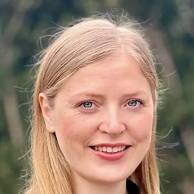

Dr. Normann
Gründer, faglig leder
Ph.d. i matematisk kosmologi. Ti år med undervisning og formidling. Vant Forsker Grand Prix 2018.

Andrea
Video og formidling
Dobbel mastergrad. I flere år ansiktet utad og drivkraften i NTNU Fysikkstudio.